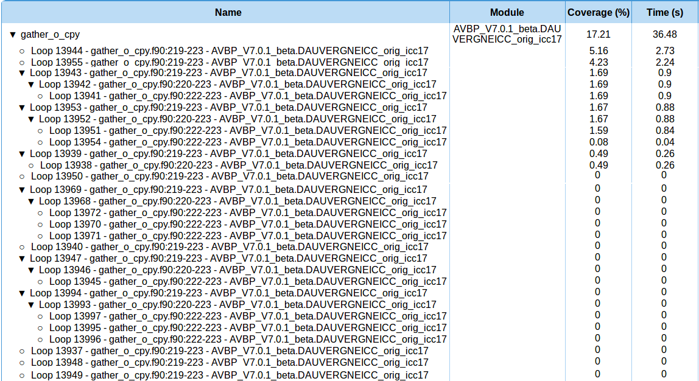
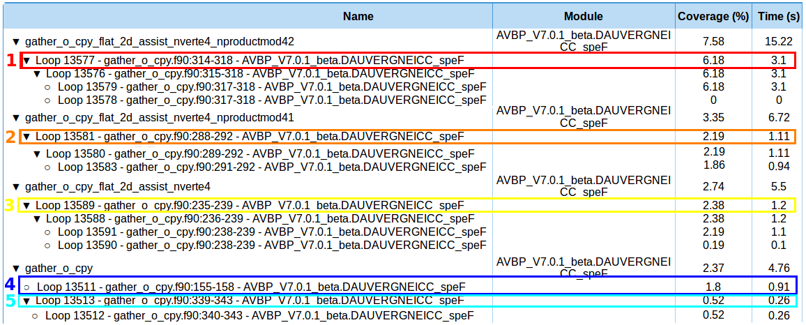
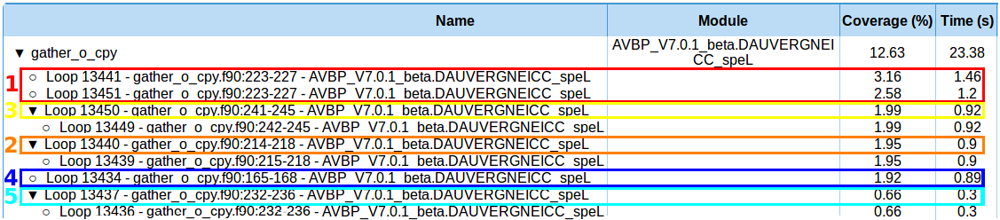
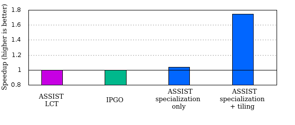
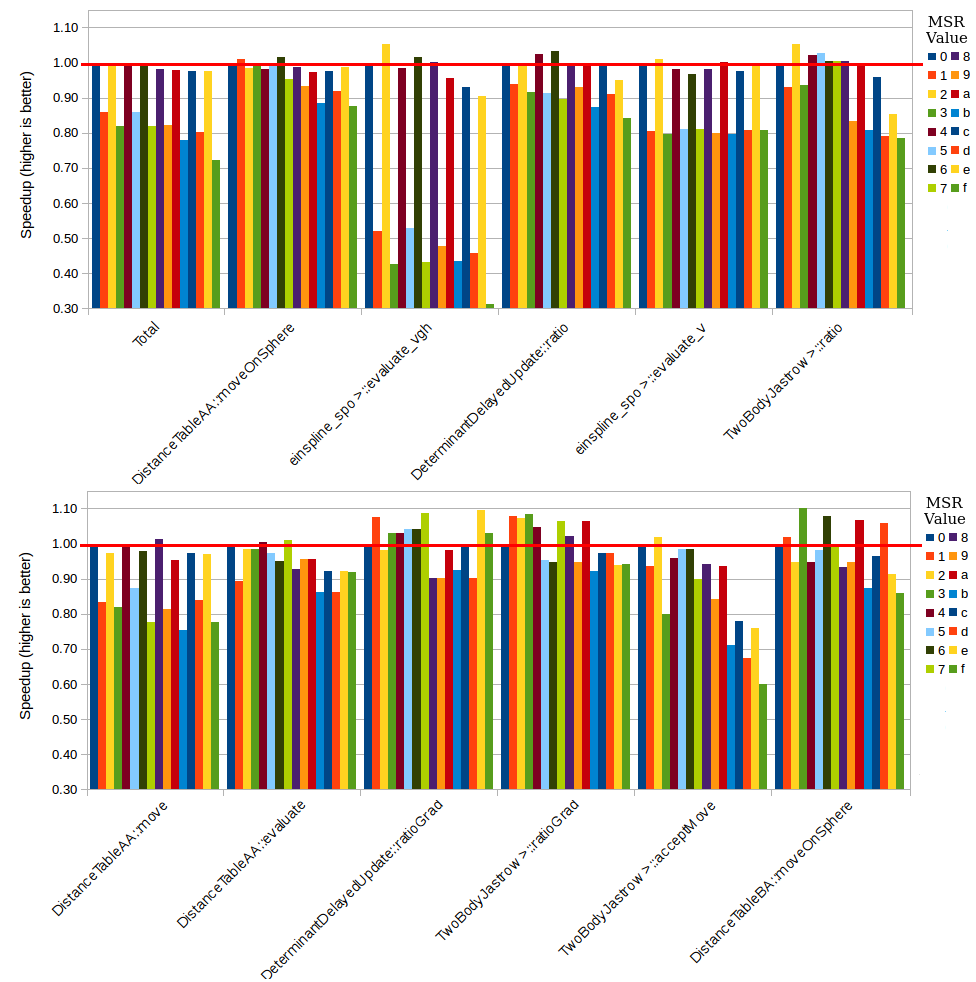
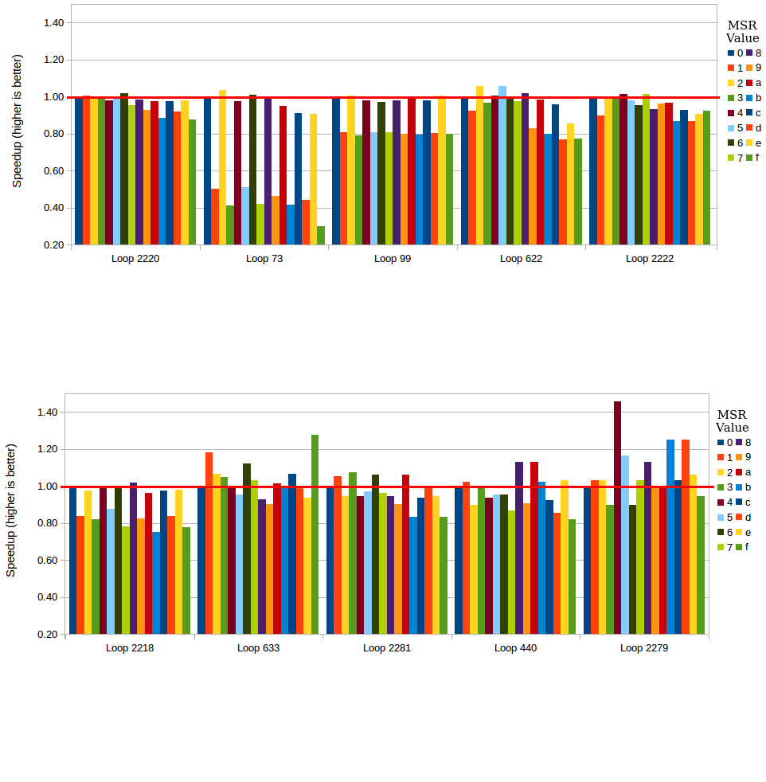
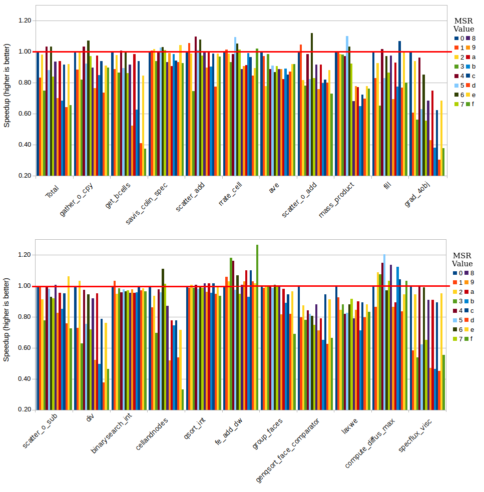
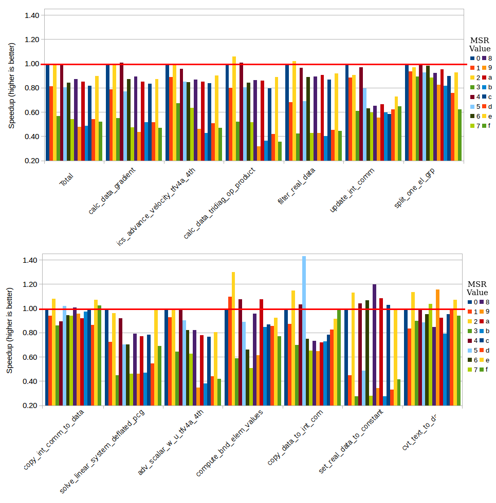
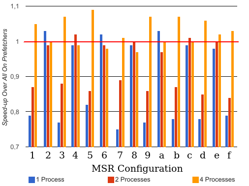

Home - Publications - Getting Started - Tutorials - MAQAO - MAQAO Team
Experimentations
In this section the results of ASSIST are presented and compared with Intel compiler PGO mode denoted (IPGO) in the sequel. Intel compilers are neither open source nor free, but they provide the best performance in our tests (compared with GCC and LLVM). The second main reason behind this choice of PGO comparison lies in the lack of availability for FDO tools for regular users. As a reminder, for IPGO, the use of profiling data enables some specific optimizations but can also modify the behavior of other optimizations such as:- using feedback data on function entry counts. Function grouping is done to put hot/cold functions adjacent to one another;
- value profiling of an indirect and virtual function calls. It is done to specialize indirect function call for a common target;
- annotating the intermediate language with edge frequencies and block counts. They are then used to guide a lot of the optimization decisions made by other passes of the compiler, such as: the in-liner and partial in-liner, the basic block layout, the conversion from switch tables to "\textit{if}" statements, loop transformations like unrolling, etc.
Application Pool
Multiple fully industrial class applications were used to test our approach:Impact of Value Profiling
Figure 1:
Figure 2:
| AVBP NASA | AVBP TPF | AVBP SIMPLE | Yales2 3D Cylinder | Yales2 1D COFFEE | |
| Number of loops | 149 | 173 | 158 | 162 | 122 |
Our first FDO optimization uses loop trip counts information obtained by value profiling using MAQAO VPROF. When loops exhibit a complex control flow due to multi-versioning, the knowledge of the trip count can help the compiler simplify the decision tree.
Figure1&2 present the speedups obtained with LCT or IPGO and the combination of both for each application/dataset. For these applications, the combination of LCT and IPGO reaches a speed up of 14\% for a sequential YALES2 run with the 3D Cylinder dataset. To ensure that the optimization is still efficient in parallel, these figures present the impact of LCT, of IPGO and of these two combined compared to original versions with the same number of processes. In most cases, the speedup decreases when the number of processes increases. This is due to the communications which proportionally increase (see MPI time plots) at the same time and take most of the execution time. On the contrary, for Yales2 with 1D COFFEE dataset, we observe speedup increase with the number of processes. This is due to an Intel compiler optimization on an Intel library function that performs a copy of a string used for all communications. Moreover, the higher the number of communications, the more often this function is called. Providing the trip count of the loop containing this function to the compiler, allows it to perform advanced optimization. This explains the speedup obtained by increasing the number of processes.
After applying ASSIST LCT, we used our verification system based on CQA to statically verify that the compiler did not generate a worse performing code. The verification system is not fully implemented, so we decided to only apply it on hot loops and confirm that the transformation does not downgrade performances. The strength of this transformation comes from the number of loops processed by ASSIST; as shown on figure3, the first twenty loops provide more than fifty percent of the total speedup gain but 130 loops are necessary to reach a maximum speedup for Yales2. For AVBP, it only requires 15 loops to reach half of the total speedup and 90 loops for the maximum. We can observe some performance degradation on a few loops but in general these degradations are limited to 0.01 second and can be due to the approximation. Number of loops processed for each test case and application is defined in table1.
This study shows that providing the compiler with a loop trip count feedback (minimum, average and maximum values) results in significant performance gains. When compared with IPGO, performance gains are lower but it should be kept in mind that IPGO and LCT ASSIST are using different optimizations. The most important point is that both can be combined and that their combination leads to higher gains.
Impact of Specialization
While optimizing applications, we notice that we often resort to function or loop specialization before applying other transformations. The following examples show how specialization alone, or coupled with other transformations, can provide significant performance gain.
Specialization Only
In this example, our target loop nest is composed of seven nested loops and ASSIST is used in two steps: first, as an automatic tool, using the automatic specialization to detect variables that can be automatically specialized. In this case, ASSIST finds that by specializing variables for certain values, it is possible to set bounds of the two innermost loops within the nest. It is also possible to remove the \textit{"if"} statements that are in these two loops; then, as users, we know that two variables - which are computed inside the loop nest - only have three possible values for most layers. These are calculated within the loop nest which prevents the previous automatic specialization. After both specializations the loop nest has increased from 30 lines to 922 lines to handle all cases of specializations, this transformation can hardly be done manually without making mistakes.
Figure 4 presents the speedups after specializations compared with the original version. Specializations offer a gain between 1.4x and 5.4x on all tested layers by creating multiple less complex versions of the loop nest that the compiler can more easily optimize. The layers used in this case are those with a (1x1) and (3x3) filters. IPGO does not appear on this figure because it does not gain any performance.
Combined With SVT
With AVBP
In this example, MAQAO indicates that, in the ten most time-consuming functions, there are loops presenting a poor vectorization efficiency and a low trip count for the three datasets: NASA, TPF and SIMPLE. We use ASSIST to couple both specializations and SVT on these functions. We first apply loop and function specializations separately, then we apply short vectorization on the most efficient version. Figure 5 only presents results on the dataset SIMPLE because compared to speedup obtained with IPGO and ASSIST LCT, it is the most relevant.
| loop id | ite min | ite max | ite avg | Potential speedup | Coverage |
| loop 2690 | 4 | 4 | 4 | 6.40 | 0.61 |
| loop 2587 | 5 | 5 | 5 | 2.00 | 0.97 |
| loop 2308 | 3 | 3 | 3 | 8.00 | 0.33 |
| loop 2551 | 5 | 5 | 5 | 8.00 | 0.37 |
| loop 2723 | 5 | 5 | 5 | 2.00 | 0.35 |
| loop 16182 | 4 | 4 | 4 | 4.00 | 11.25 |
| loop 13641 | 4 | 4 | 4 | 4.00 | 1.52 |
| loop 13752 | 4 | 4 | 4 | 2.67 | 3.46 |
| loop 13692 | 4 | 4 | 4 | 4.00 | 2.98 |
| loop 13902 | 3 | 3 | 3 | 6.67 | 2.51 |
Figure 6 compares the speedup ratios of each version (LCT, IPGO, LCT + IPGO and SVT). For the TPF dataset, SVT allows to gain as much as the combination of LCT and IPGO. But for the NASA dataset, the best results of LCT+IPGO only allows to reach half of the speedup obtained with SVT for one MPI thread. It is more blatant with the SIMPLE dataset, the speedup of LCT and IPGO does not reach more than 2% individually and 4\% when combined, contrary to ASSIST SVT which reaches a 12% speedup for the SIMPLE dataset. When the compiler fails to vectorize a loop properly, SVT is very effective given that it explicitly exposes a simpler loop structure with no peel or tail loops to the compiler.
There are two mains reasons why the compiler does not vectorize: first, the dependence analysis reveals dependencies preventing vectorization, and second, the cost model used by the compiler produces estimates indicating that a vectorization is not beneficial. For other cases, the compiler performed an outer vectorization on loops with a small number of iterations, CQA detects a bad "vectorization efficiency" on these loops. CQA offers multiple vectorization metrics such as vectorization-ratio or a vector-efficiency ratio on loads, stores, etc. allowing to assess the performance level obtained. In our case, we use these metrics to provide ASSIST with quality estimates of the vectorization carried out by the compiler. We can then decide whether or not to perform a good vectorization in order to finally trigger the transformation. The short vectorization transformations force the compiler to vectorize small loops with a small number of iterations; the compiler also fully unrolls these loops. After transformations, we use our verification system with CQA to validate the transformations. Indeed, before transformations, CQA only detects 33% of vectorization and after, CQA reports the loop as fully vectorized.
To apply SVT, loop bounds have to be known. To set these bounds, we specialize functions on one side, and loops on the other; we then apply the SVT on the best specialization for each function. Figure 5 presents the speedups obtained at each step to show their individual impact, we add ASSIST LCT and IPGO for comparison. We observe that SVT can raise up to 2.6x while the loop and function specialization only achieves, at best, a speedup of 1.5x. Performing only loop or function specialization may be counterproductive in some cases because of the induced complexity of the control flow, if no further induced optimizations are possible. Table2 presents metrics from CQA and VPROF of loops before applying the SVT; these metrics did motivate our choice to use SVT. For all of these loops, the number of iterations is smaller than five and with a good potential speedup if fully vectorized.
To understand why the function specialization degrades performances of the function "gather_o_cpy", we analyze and compare the next three versions: the original version and the versions of both specializations. First, the original loop nest is presented on code below and the results on the image1. They show the original loop nest and the execution information collected by MAQAO on that loop nest. As we can see, the compiler has created several versions of this loop nest. Each loop of the figure~\ref{AVBP_orig_info} represent a different version of the same loop nest (which start at line "219" to "223"). The sum of the execution time of all of these versions is 7.1 seconds out of the 36.48 seconds of the execution of the function. For example, the loop 13955 corresponds to a version where the loop nest has been unrolled 72 times with the loop 13944 as peel/tail.
...
DO n=1, nel
DO no = 1, nvert
!DIR$ SIMD
DO k= -nproduct+1, 0
zobj(no * nproduct + k , n) = z(ielob(no,n) * nproduct + k)
END DO
END DO
END DO
...
 Img 1: Original version: Execution time details for the function "gather_o_cpy" and all the variants of its loop.
Now, we compare both specialization versions. On one side, image2 shows the results for the function specialization version. All versions of the function are detailed with their coverage, execution time by function and associated loop nests. On the other side, image3 shows the results for the loop specialization version. All loops versions are in the same function. To easily compare them, we numbered each loop nest. Each number correspond to the same specialized version. There was no number in image1 because all loops correspond to the same source loop different
 Img 2: Function Specialization version: Execution time details for the function "gather_o_cpy" and its loops.
 Img 3: Loop Specialization version: Execution time details for the function "gather_o_cpy" and its loops..
We can observe two main reasons for this performance degradation. First, the compiler differently managed the two versions. If we look at loop 1; for the function specialization, the compiler optimizes the inner loop in contrary with the loop specialization where the nest to come two single loops.
Second, the loops do not represent the majority of the execution time of the function. We can see on image3 that the execution of the function "gather_o_cpy" last 23.38 seconds. However, loops only represent approximately 24% (=5.67 seconds) of the whole execution time. Similarly for the function specialization version, if we sum up all specialized functions, the execution time is 32.22 seconds. The sum of the loops of these functions also represents approximately 24% (=7.5 seconds) of the whole execution time. The difference between the two versions without loops is of 6 seconds. Most of the time is spent in the function and not in the loop. This is the main reason why function specialization is slower. Both specializations aim to improve these loops by fixing the number of iterations. However, by duplicating the function, we also duplicate all other elements such as the call, the parameters, etc.
Such cases can be detected by subtracting the time of the targeted loop to the time of the function containing this loop. It will help to decide which one of both loop and function specializations to perform and thus avoiding such performance slowdowns. However, subtract the execution time of the loop to the one of the function only work if we want to only specialize this loop and the specialization has no impact on the rest of the function.
With Polaris
Polaris has the same problem as AVBP with two most time-consuming scatter/gather loops with poor vectorization efficiencies. Their number of iterations is higher than usual (around 60 for both) so we use the ASSIST generic SVT with a modulo of four. Table3 presents the results of these two loops when using the dataset "test_1.0.5.18".
| Execution Time before trans (sec) | Execution Time after trans (sec) | Speedup (higher is better) | Coverage | |
| Polaris | 73.32 | 70.26 | 1.04 | |
| loop 6909 | 4.27 | 3.14< | 1.36 | 5.72% |
| loop 6911 | 3.64 | 2.36 | 1.54 | 4.98% |
These two loops represent 10% of the coverage of the whole application. ASSIST has been used on only these two loops for two reasons. First, 70% of the application time is passed in a function which computes each point of the matrix without using a loop and where we can not perform any transformation. Second, other loops are array line fortran representations; compilers refuse any loop-directive above this kind of loop, so we cannot apply the LCT on Polaris.
SVT has not been applied on Yales2 because CQA indicated that vectorization would lead to the use of scatter/gather instructions which are costly and make vectorization not beneficial. The level of indirection is high, due to irregular geometric access and the main bottleneck is the address computation.
Combined With Tiling
In this example, ASSIST is used as a semi-automatic tool and is fully driven by the user. At first, a full profiling of the code is performed followed by a value profiling on one of the main hotspots of the application. Three input parameters were found to be of importance.
First, the function can be called with two different types of input data, either real-valued data or complex-valued data. A given test case will almost exclusively use one or the other. As those data are expressed as an array with one or two elements in a part of the code, specialization of this value simplifies address computations and vector accesses by making the stride a compile-time constant rather than a dynamic value.
Second, multiple variants of the algorithm are implemented in the function. Which exact variant is used, depends on two integer parameters. Again, a given test case is usually heavily biased towards a small subset of possible cases. The specialization of one case allows to remove multiple conditionals. For a given case, different branches appears in the loop nests. This removal of conditionals exposes the true dynamic chaining of the loop nest directly to the compiler with no intervening control-flow break.
Once specialized with ASSIST, the function becomes much simpler to study. A study using MAQAO DECAN previously indicated that data access was very costly and that tiling would be very beneficial. More precisely, a large array is updated in its entirety inside a loop; a bad pattern for cache usage. Loop tiling makes it possible to update the array by block, and to only scan and update the array once. While this work would not be particularly difficult to do by hand, more than two dozen variants of the loop nest with similar properties appear in the original function. As the transformed loop adds an extra loop to the nest, this complicates indexes and requires a remainder loop. It is much easier and much more reliable to automate the transformation process.
!DIR$ MAQAO SPECIALIZE(choice=1,paw_opt=3,cplex=2)
!DIR$ MAQAO SPECIALIZE(choice=1,paw_opt<3,cplex=2)
!DIR$ MAQAO SPECIALIZE(choice=1,paw_opt>3,cplex=2)
subroutine opernlb_ylm(choice,cplex,paw_opt,...)
...
if(choice==1) then
!DIR$ MAQAO TILE_INNER_IF_SPE_choicee1=8
do ilmn=1, nlmn
do k=1, npw
z(k)=z(k)+ffnl(K,1,ilmn)*cplx(gxf(1,ilmn) &
,gxf(2,ilmn),kind=dp)
end do
end do
end if
...
end subroutine
SUBROUTINE opernlb_ylm(...)
IF ((choice.EQ.1).AND.(paw_opt.EQ.3)/aND(cplex.EQ.2)) then
CALL opernlb_ylm_ASSIST_choicee1_paw_opte3_cplexe2(...)
RETURN
END IF
IF ((choice.EQ.1).AND.(paw_opt.LT.3)/aND(cplex.EQ.2)) then
CALL opernlb_ylm_ASSIST_choicee1_paw_opte3_cplexe2(...)
RETURN
END IF
IF ((choice.EQ.1).AND.(paw_opt.GT.3)/aND(cplex.EQ.2)) then
CALL opernlb_ylm_ASSIST_choicee1_paw_opte3_cplexe2(...)
RETURN
END IF
...
END SUBROUTINE
...
SUBROUTINE opernlb_ylm_ASSIST_choicee1_paw_opte3_cplexe2(...)
...
lt_bound_npw = (npw / 8) * 8
DO lv_var_k = 1, lt_bound_npw, 8
DO ilmn = 1, ilmn
DO k = lt_var_k, lt_var_k + (8-1)
z(k)=z(k)+ffnl(K,1,ilmn)*cplx(gxf(1,ilmn) &
,gxf(2,ilmn),kind=dp)
END DO
END DO
END DO
...
END SUBROUTINE
SUBROUTINE opernlb_ylm_ASSIST_choicee1_paw_opti3_cplexe2(...)
...
END SUBROUTINE
SUBROUTINE opernlb_ylm_ASSIST_choicee1_paw_opts3_cplexe2(...)
...
END SUBROUTINE
ABINIT - Example of function specialization coupled with loop tiling, performed with ASSIST, for the use case Ti-256. Boxes highlight the tiling transformation of the innermost loop.
 Figure 7: ABINIT - Ti-256 - Speedups of IPGO, ASSIST LCT, specialized with ASSIST, specialized and tiled with ASSIST compared to the original version.
Part (a) shows the directives on an extract of the function. Three specialized variants are produced for the common use cases in our reference test Ti-256, by the first three lines of the figure. The critical loop nest is subsequently tiled, but only in the specialized version, by the directive immediately above the loop nest. Part (b) shows extracts from the output of ASSIST. The specialized variants are called whenever the parameters are appropriate.
Every condition previously dynamically encountered is now collapsed into that one test. The original function also shows the new loop nest with the loop tiling transformation applied. Only height elements (a friendly value for a vectorizer) are computed in the innermost loop versus the entire array previously. An outer loop has been added which scans the entire array by block of size height. In practice, the innermost loop is removed by the compiler which fully unrolls and vectorizes it.
Speedup results are shown in figure 7. We added IPGO to show the potential of our approach. Specialization offers a small gain but the dominant issue is still the time spent in the critical loop nest. Adding tiling offers a large gain of almost 1.8x in total by significantly reducing the memory bandwidth of the critical loop nest. Despite the complexity of the original function, the same transformations could be easily applied to other cases using ASSIST.
Impact of Prefetchers
Prefetchers setting has an important impact on performance. The default setting of all prefecthers on is not necessarily the best one. In this section, we analyze the impact of different prefetcher configurations on three applications with three different behaviors.
With Mini QMCPAK
The first application used is Mini QMCPACK. Specific runs have been made to test various prefetcher configurations, presented on table~\ref{tab:prefetchers_def}. All prefetchers on are encoded as 0 and all prefetchers off are encoded as f. As reminder of the documentation, there are 4 prefetchers. Each of them can be turned on or off, making a total of 16 different prefetcher configurations available. For each prefetcher configuration a full run including profiling at the function and loop level, was performed. We compared the impact on performance at three levels: full application, function and loops.
| prefetchers config | 0 | 1 | 2 | 3 | 4 | 5 | 6 | 7 | 8 | 9 | a | b | c | d | e | f |
| L2 hardware prefetcher | 0 | 1 | 0 | 1 | 0 | 1 | 0 | 1 | 0 | 1 | 0 | 1 | 0 | 1 | 0 | 1 |
| L2 adjacent cache line prefetcher | 0 | 0 | 1 | 1 | 0 | 0 | 1 | 1 | 0 | 0 | 1 | 1 | 0 | 0 | 1 | 1 |
| DCU prefetcher | 0 | 0 | 0 | 0 | 1 | 1 | 1 | 1 | 0 | 0 | 0 | 0 | 1 | 1 | 1 | 1 |
| DCU IP prefetcher | 0 | 0 | 0 | 0 | 0 | 0 | 0 | 0 | 1 | 1 | 1 | 1 | 1 | 1 | 1 | 1 |
0=prefetcher on, 1=prefetcher off.
With this experimentation we want to analyze the impact of prefetchers on the Mini QMCPACK application using different datasets.
All executions have been done on an Haswell-E.
The application takes as input : "-n <I> -g <X Y Z>", where "<I> represents the number of iterations and "<X Y Z>" the size of the problem.
The tests cases used for our experiments are :
"-n 320 -g "2 1 1" ", "-n 160 -g "2 2 2" ", "-n 40 -g "2 2 2" ", "-n 20 -g "4 2 2" ".
Figure 8 represents the speedup by function for all configurations for the eleven hottest functions of the application.
Figure 9 represents the speedup by loop for all configurations for the eleven hottest functions of the application.
During the different runs, we noticed instabilities (between 2 to 10%) for all configurations, but it was interesting to see that trends were preserved.
 Figure 8: Mini QMCPACK -
-n 20 -g "4 2 2" - Speedup by function for all configurations. All speedups are compared to the configuration 0 (all prefetchers on).
The graph is divided into two parts.
 Figure 9: Mini QMCPACK -
-n 20 -g "4 2 2" - Speedup by loop for all configurations. All speedups are compared to the configuration 0 (all prefetchers on).
The graph is divided into two parts.
Figures 8 & 9 show is that each time the "L2 hardware prefetcher" is disabled, performances are degraded. Another observation is that other prefetchers have less impact on the application. Even if at loop or function level, modifying prefetcher configuration allows to obtain good speedups; the configuration with all prefetchers enabled stays the one that allow to obtain best performances on the whole application. However, if our aim would not be reducing execution time but reducing energy consumption, the configuration "e" would be the best choice because we disabled three of the four prefetchers while reaching 98\% of the best combination configuration.
Our first tests of using ASSIST to locally modifying prefetchers configuration by adding calls at function level according to the best configuration were not conclusive. By calling the code in Appendix~\ref{appendixB:prefetch}, which only writes the value corresponding to the desired configuration in a specific register for each CPU, the operating system added guards that add a slowdown to the execution. This slowdown can multiply the execution time from three to ten times. The same effect has been observed even on small codes and benchmarks such as Numerical Recipes (NR) and no alternatives were found. A last remark is that trends are similar at function and loop levels. This can be explained by the fact that most of the time, functions are composed of one loop or loop nest which represents the most part of the execution of the function. Subsequently, we only present results obtained at function level.
With AVBP
The second application used is AVBP. Figure10 presents the speedup of each version of the MSR compared to all prefetchers enabled of hottest functions (functions with at least 1% coverage). As we can see, most of the time, having all prefetchers enabled is more often efficient at application level, except for the configuration 4 and 6 where we have a little speedup at application level. With some combinations, enabling only a few prefetchers allows to obtain closed performances gain but each times that "L2 hardware prefetcher" is disabled performances dropped significantly. At function level we observe that we could obtain good results by modifying prefetchers configuration at function level. They are several function where different configuration allow to obtain better speedup that the configuration 0. In some cases, speedups up to x1.20.
 Figure 10: AVBP - SIMPLE: Speedup by function for each prefetcher configuration. All speedups are compared to the configuration 0 (all prefetchers on). The graph is divided into two parts.
With Yales2
The last application used is Yales2. Previous results on AVBP and Mini QMCPACK have showed that when executed in sequential, the best prefetchers combination for best performance is often when all prefetchers are enabled. We also saw that by disabling some of prefetchers could save energy while still being competitive in term of performance.
Figure 11 presents the speedup of each version of the MSR compared to all prefetchers enable of hottest functions (functions with at least 1% coverage). As for others applications, at application level, having all enable prefetchers is the most efficient combination and each time the "L2 hardware prefetcher" is disabled performances drops. However, with some combinations, enabling only few prefetchers allows to obtain closed performances gain and even better at function level, where we obtain speedups up to x1.40. But, even at function level, each times that "L2 hardware prefetcher" is disabled performances drop significantly.
We now analyze the impact of the different prefetchers setting on a parallel application, Yales2. Results for Mini QMCPACK in parallel were not presented because they are less interesting. Figure~\ref{PrefetchYales2_parallel} presents speedups of the Yales2 dataset "3D Cylinder", with different prefetcher settings, for one, two and four MPI processes. All settings are compared to the configuration 0. As we can see on figure~\ref{PrefetchYales2_parallel}, all prefetchers on is the best configuration when the application is executed in sequential. However, the more the number of processes increases, the more the trend changes. With four processes the trend is inverted and the performance is improved. Parallelism adds a new perspective about the prefetcher settings. For applications that have to be executed with multiple processes, it is interesting to profile which configuration can bring performance. Nevertheless, all settings have to be profiled because it is impossible to predict performances according to one or another configuration.
 Figure 11: Yales2- 3D_Cylinder: Speedup by function for each prefetcher combination. All speedups are compared to the configuration 0 (all prefetchers on). The graph is divided into two parts.
 Figure 12: Yales2 - 3D_Cylinder: Speedup by prefetcher combination compared to all prefetchers enabled for one, two and four processes.
Impact of Intrinsic Prefetcher Function
Prefetchers can also be controlled more precisely by adding an intrinsic prefetcher function call in the source code. This function is used to indicate to fetch a line of data from memory that contains the byte specified with the source operand to a location in the cache hierarchy specified by a locality hint. The hints indicates if its is a temporal data, a temporal data with respect to second level cache misses, or a non-temporal data.
With Numerical Recipes
We first try this optimization on the well-known benchmarks Numerical Recipes (NR).
We worked on three benchmarks, s319, s1244 and matadd.
When the intrinsic function was inserted in the code source, the compiler modified its optimization choices and disabled all optimization performed before that the call was added.
Vectorization and unroll were disable.
This is one of the main issue when optimizations are done at source level, the compiler can modify its optimization choices and it harms to our predictions.
We forced the vectorization using the directive "simd" and unrolled the loop at source level but the compiler rewound the loop and still not vectorized.
To verify if our optimization worth it anyway, we apply the optimization at binary level to keep previous compiler optimization in addition of the prefetch.
The prefetch function has been only add for store data.
Table 5 shows that by prefetching store data with different distances allows an important improvement.
From 12% speedup for s1244 to 45% for s319.
| NR | ORIG | prefetch | prefetch 64 | prefetch 128 | prefetch 256 | prefetch 512 | prefetch 1024 |
| s319 | 172936 | 112116 | 112248 | 112268 | 112172 | 117300 | 111832 |
| s1244 | 131296 | 103236 | 102684 | 105352 | 104128 | 106724 | 103644 |
| matadd | 341436 | 278708 | 278388 | 281464 | 278040 | 274956 | 274228 |
With QMCPACK
Same observations have been done with QMCPACK, the compiler disable all previous optimizations when intrinsic prefetcher function is added at source level. As for NR, the function has been added at binary level. Table 6 shows results on different loops of the application. We can see that the comportment may differs from a loop to another one. Fetching a data allows to obtain performance gains (loop 19042) as it can degrade (loop 19064). Sometimes it can have both depending of the distance prefetched (loop 30871).
| Loop id | ORIG | prefetch | prefetch 64 | prefetch 128 | prefetch 256 | prefetch 512 | prefetch 1024 |
| 30954 | 5212 | 4892 | 5032 | 5012 | 5008 | 5040 | 5024 |
| 30944 | 1840 | 1220 | 1220 | 1220 | 1224 | 1220 | 1220 |
| 30871 | 490 | 500 | 456 | 484 | 500 | 492 | 488 |
| 19064 | 5672 | 5756 | 6188 | 5896 | 6816 | 6032 | 6348 |
| 19042 | 2726 | 1640 | 1520 | 1592 | 1648 | 1672 | 1628 |
For this transformation, the compiler remains our main limitation by refusing to apply optimizations as soon as the loop contains a function call, even if it is an intrinsic function. The second limitation is how to detect when trigger this transformation. Prefetching data improves performance when the cache line is not in L1 and have to be loaded for not waiting when we need it. DECAN can inform us for these cases with the "REF" variant. This variant adds a load before stores data and compare the number of cycles for both versions. A last issue is for the distance to choose. Currently, we do not have metric to decide which distance choose, we have to test them all to know which one is the more efficient.
Impact of other common transformations
With QMCPACK
QMCPACK is a good example of when compiler failed to optimize and what is remained to do in term of transformations with ASSIST. With this example, we observe that the compiler tends to refuse to vectorize some loops. It prefers optimizes according to a pattern that we must recognize without using vector instructions. Due to the Rose lack of C++ management which considers template statements as string nodes we could not applied our optimizations with ASSIST. However, we tried to resolve manually the issues which where pointed to by MAQAO.
| Loop id | ORIG | FU | FU_DIV | FU_DIV_SIGNBIT | FU_DIV_SIGNBIT_SIMD |
| Total | 143.18 | 138.74 | 127.22 | 129.8 | 127.76 |
| ParticleBConds3DSoa.h | 10.52 | 7.5 | 7.7 | 8.22 | 7.94 |
| bspline_create.c | 51.24 | 50.86 | 40.92 | 40.96 | 40.1 |
| BsplineFunctor.h | 1.4 | 1.32 | 1.46 | 2.5 | 1.4 |
At first, we worked on two categories:
- 1) All of the loops with bad vectorization ratio.
- 2) The loops with high flow complexity.
Table 7 present results obtained with different optimizations.
All optimizations have been applied iteratively.
The first loop we work on is an interesting case because it was a loop where inside there was an innermost loop with 7 iterations.
This innermost loop was flagged with a directive to perform full unroll.
In fact the compiler generated a very complex code with a lot of branching (more 128 paths, making static analysis difficult).
We simply hand unrolled the loop which gave an overall decent performance gain around 2.5% execution of the whole application.
This optimized version is called "FU".
The second loop is in "bspline_create.c".
It has three divisions using the same denominator.
These divisions have been replaced by, one division of the inverse and three multiplications of the results of the division.
This version is called FU_DIV.
For the FU_DIV_SIGNBIT verson, we use the "signbit" function to replace an if statement as follow.
The "signbit" function determines if the given floating point number in argument is negative and return 1 if it is else 0.
#pragma vector always
for ( int jat = 0; jat < iLimit; jat++ ) {
real_type r = distArray[jat];
if ( r < cutoff_radius )
distArrayCompressed[iCount++] = distArray[jat];
}
#pragma simd
for (int jat = 0; jat < iLimit; jat++)
{
real_type r = distArray[jat];
int signbit = std::signbit(r - cutoff_radius);
distArrayCompressed[iCount] = r * signbit;
iCount+=signbit;
}
By applying this transformation, there are most instructions executed at each iteration but they can be vectorized. Therefore, the more the number of iterations, the more the code will be efficient. However, even if the code can be vectorized with this new implementation; the Intel compiler only vectorize the loop at 20%, even with the
#pragma vector always.
We had to add the #pragma simd directive instead to be more aggressive and force him to vectorize this loop.
The loop where the "signbit" transformation was applied has not enough iterations in this dataset to be efficient, but when vectorized we do not degraded performances.
This last transformation is very complex to automate it, but it is interesting to present this solution to improve vectorization when compiler cannot perform it.